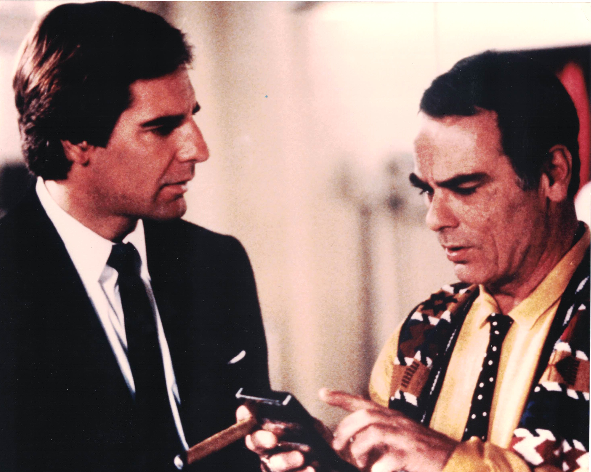

Product No. HEC-0041
$14.99
Shipping: $8.95
Description
8x10 color photograph
Full Description
"Quantum Leap" is an American science-fiction television series that originally aired from 1989 to 1993. Created by Donald P. Bellisario, the series starred Scott Bakula as physicist Dr. Sam Beckett and Dean Stockwell as his friend and project observer, Admiral Al Calavicci. The story follows Sam Beckett after an experiment with time travel goes wrong. Sam becomes trapped "leaping" through time, temporarily taking the place of different people within his own lifetime. In each episode, he must determine what has gone wrong in that person's life and correct it before he can leap again. Sam is assisted by Al, who appears to him as a hologram that only Sam can normally see and hear. Al receives information from the project's computer, Ziggy, helping Sam understand the people and historical circumstances surrounding each leap. The series mixed science fiction with drama, comedy, romance, and real historical events. Episodes addressed subjects including racism, war, disability, family relationships, crime, and social change, while maintaining the central mystery of whether Sam would ever return home. "Quantum Leap" developed a devoted following and became one of the most memorable science-fiction television programs of its era. Scott Bakula's portrayal of Sam Beckett and Dean Stockwell's performance as Al remain closely associated with the series, making cast autographs, photographs, and other "Quantum Leap" memorabilia especially popular with science-fiction and classic television collectors.
Condition
Excellent condition